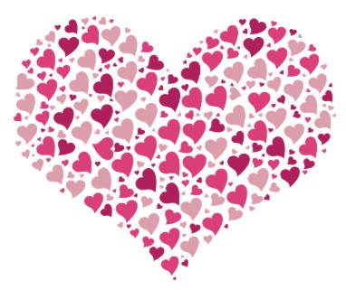
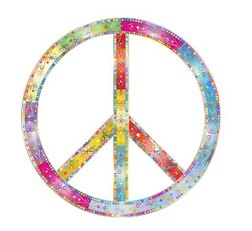
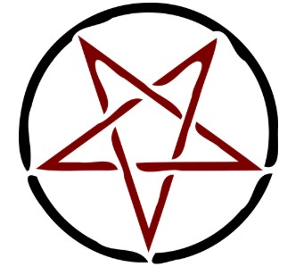
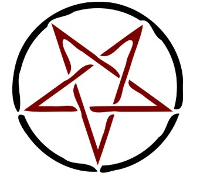

My first portfolio
Ovo je prvi portfolio koji sam napravila. Trenutno nije baš zanimljiv. Ali srediću ga i biće lepši.

Evo još nekih simbola koji spadaju među najpoznatije i čije značenje skoro svako zna.
 
 

- Evo liste simbola:
- Detelina
- Srce
- Mir
- Svevideće oko
- Pentagram